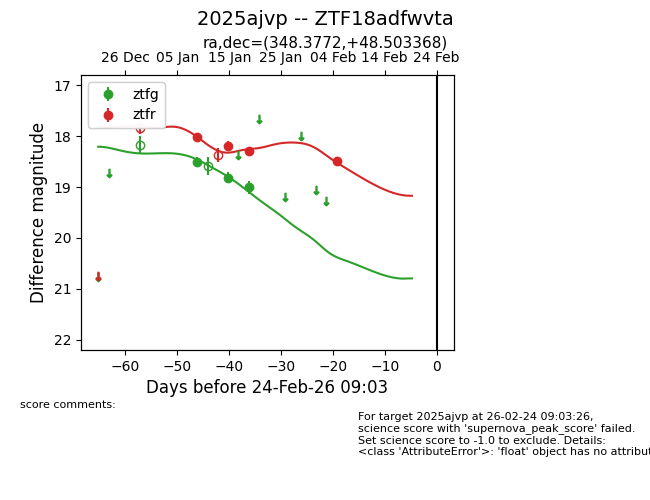
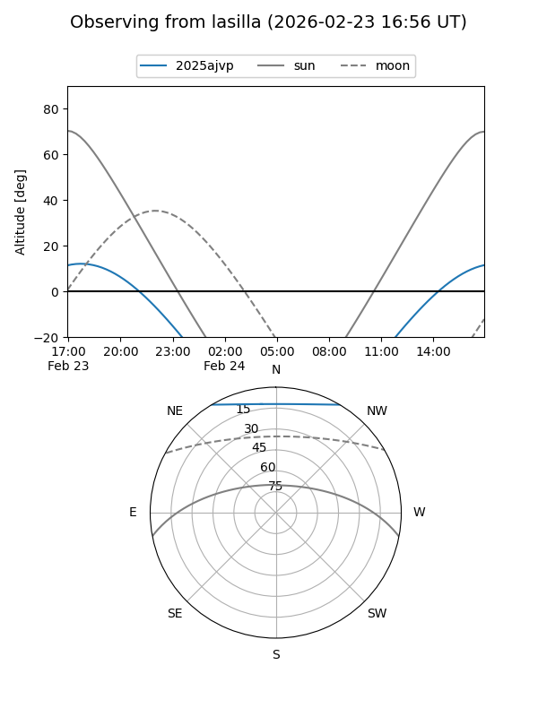
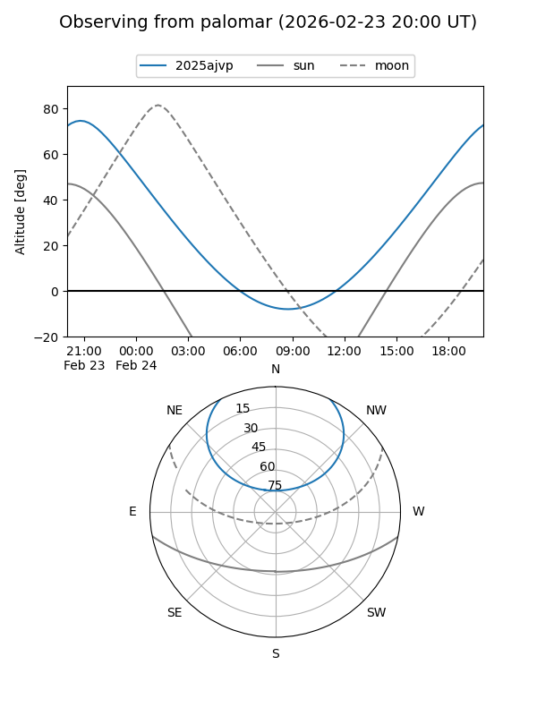

2025ajvp
Target 2025ajvp at 2026-01-09 07:10
Aliases and brokers:
FINK:
Lasair:
ALeRCE:
TNS:
YSE:
alt names
ZTF18adfwvta (ztf,fink_ztf)
2025ajvp (tns,yse)
Coordinates:
equatorial (ra, dec) = 348.3771,+48.50345
equatorial (HMS+DMS) = 23:13:30.51,+48:30:12.40
galactic (l, b) = (106.6740,-11.25261)
Flags:
Photometry:
last ztfg=18.51
1 ztfg detections
Lightcurve

Visibility


Additional plots